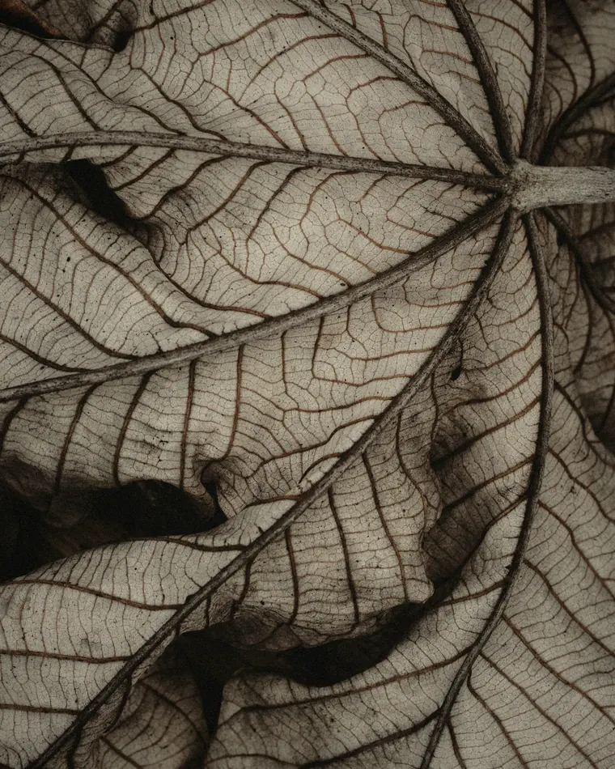
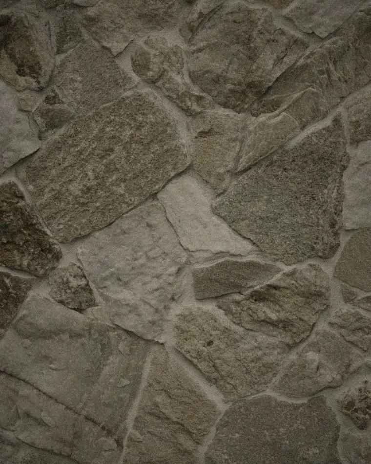
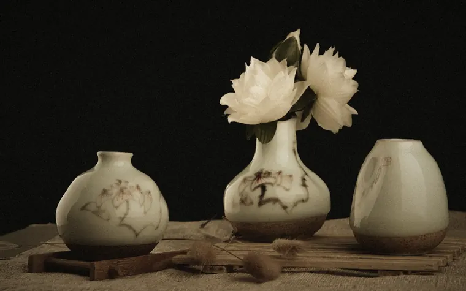
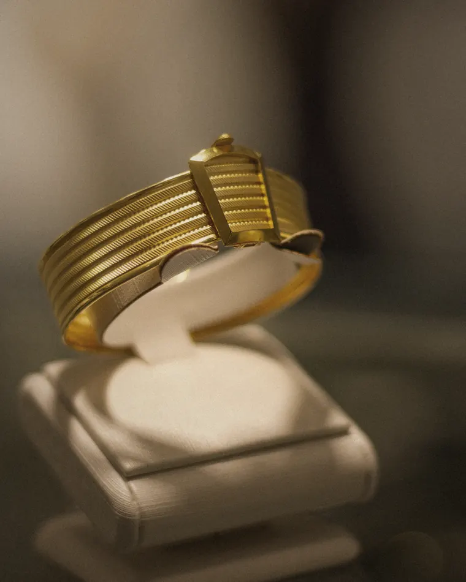
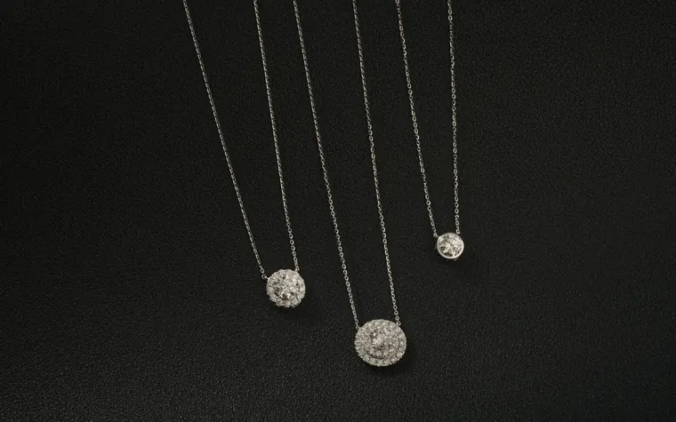

01
2024
 Zine · 印刷實驗
Zine · 印刷實驗
Residue殘影
一本關於「留下來」的獨立刊物。以揉皺的紙、曬褪的墨與重複套印，記錄物件被使用過的痕跡。
Brand identity · Typography · Editorial design
視覺設計師 / 以字為骨，以紙為膚
make peace
讓風格被看見，與不完美和解
A / 關於
設計不是裝飾，而是一種觀看的方式。我把每一次委託視為一次校準：先讀懂品牌原來的樣子，再讓它以自己的語言被看見。
Design is not decoration but a way of seeing. Every commission begins with reading the brand as it already is.
B / 方法
從紙張的纖維、油墨的厚度、字距的呼吸開始，把抽象的策略落回可以被觸摸的細節。
From paper fibre, ink density and the breathing of letter-spacing — strategy returns to something you can touch.
C / 數字
五個案子 · 2021 — 2026
由左至右，拖曳或滾動。
Drag or scroll horizontally — five selected projects.
Zine · 印刷實驗
一本關於「留下來」的獨立刊物。以揉皺的紙、曬褪的墨與重複套印，記錄物件被使用過的痕跡。
 Identity · 品牌識別
Identity · 品牌識別
為一間山間茶室所做的識別系統。以留白計算器皿與人之間的距離，讓靜默成為品牌的聲音。

Specimen · 字體標本一組以葉脈為格線的字體標本。把拉丁字體的骨架與植物的生長秩序並置，讓排版長出自己的形狀。
 Poster · 展覽視覺
Poster · 展覽視覺
美術館年度展的海報系列。只用三種油墨與一張紙，讓每一張海報都像一齣只有一幕的戲。
 Packaging · 器物包裝
Packaging · 器物包裝
手工陶器的包裝。用最少的材料托住最脆的部分，開箱的節奏本身即是設計的一部分。

about us
關於我們 · A studio of one
讓風格被看見，與不完美和解。
詮釋質感肌理，去繁就簡，從而專注。
慢慢沉澱，自由生長。
Simplify complexity and focus on simplicity. Slowly settle and grow freely.
林知，視覺設計師，現居杭州。畢業於中國美術學院視覺傳達設計系，曾於上海與東京的設計工作室工作，2021 年成立個人工作室。
專注品牌識別、字體排印與編輯設計。相信好的設計應該經得起反覆觀看，也經得起被手指觸摸。
設計理念 · Four notes on method
不先決定風格。先花時間理解品牌原來的樣子，再找出它還沒被說出口的那一句。
拿掉多餘的裝飾，讓資訊的層級自己說話。少不是目的，清楚才是。
紙的重量、墨的擴散、裝訂的鬆緊——這些觸覺細節，是螢幕無法取代的說服力。
交付的不是一張圖，而是一套能被別人繼續使用的規則。

「最好的設計是讓人忘記設計本身，
只記得被照顧的感覺。」
設計風格 · Materials & texture
質感、光線、留白與誤差。
Texture, light, margin and error.






完美是無趣的終點， 誤差才是生長的開始。